WoWGD vs benilla
Same character, realm and data · measured 2026-09-24
benilla is a 1.12.1 client in Rust and Bevy.
Both clients played the same dwarf on the same vMaNGOS realm in a 1920x1080 window.
Numbers
| WoWGD | benilla | |
|---|---|---|
| Launch to character list | 2.57 s | 1.49 s |
| Launch to entering the world | 2.63 s | 1.50 s |
| World load (enter to loading screen gone) | 1.95 s | 3.96 s |
| Launch to playing | 4.56 s | 5.46 s |
| CPU while idle in Goldshire | 107% | 180% |
| Memory while idle (RSS) | 1.62 GiB | 1.50 GiB |
| Peak memory (RSS) | 1.62 GiB | 1.51 GiB |
| Frame rate while idle | 106 fps | 146 fps |
Medians of three cold launches. CPU is a percentage of one core, averaged over a minute idle.
Notes
- Both are Linux release builds (benilla at
43b282a0) with vsync off and no frame cap. - benilla's loading screen waits for everything nearby to load. WoWGD's clears once the nearby tiles are in and streams the rest.
- Ryzen 5 3600, 32 GB RAM, RTX 3060, CachyOS on Wayland, server on the local network.
Screenshots
Same spots, same camera, interface hidden. Drag to compare WoWGD (left) with benilla (right).
WoWGD has an option for real-time shadows, and it was off for these shots and the numbers above. benilla has no such option and only draws the baked terrain shadows and blob shadows under units that 1.12 does.
WoWGD also keeps name plates on screen with the interface hidden.
Goldshire, Elwynn Forest
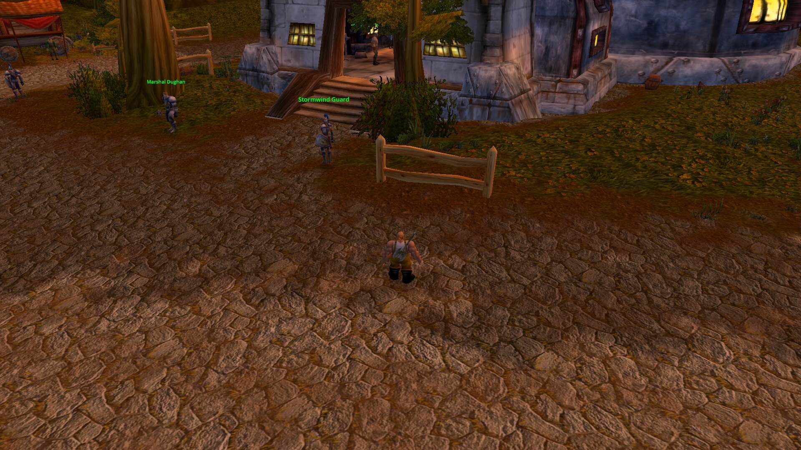
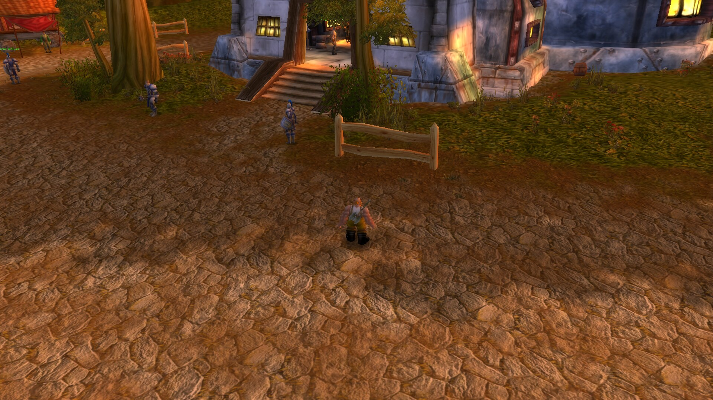
WoWGD benillaStormwind
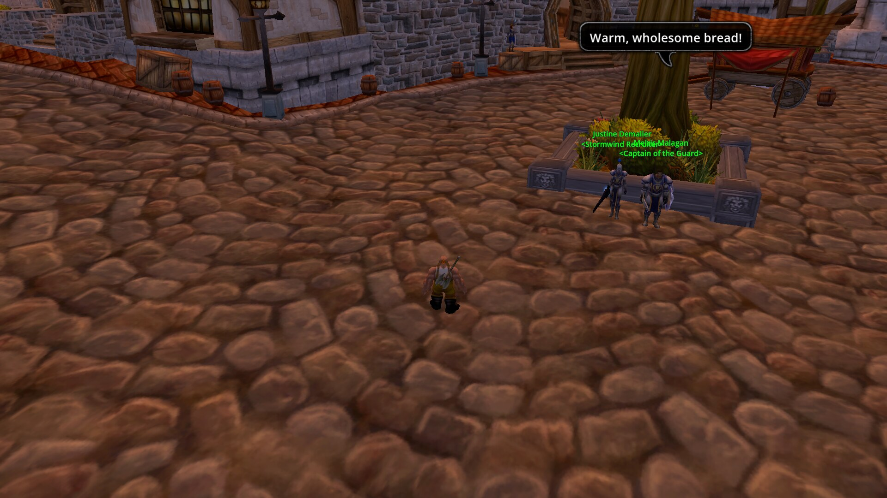
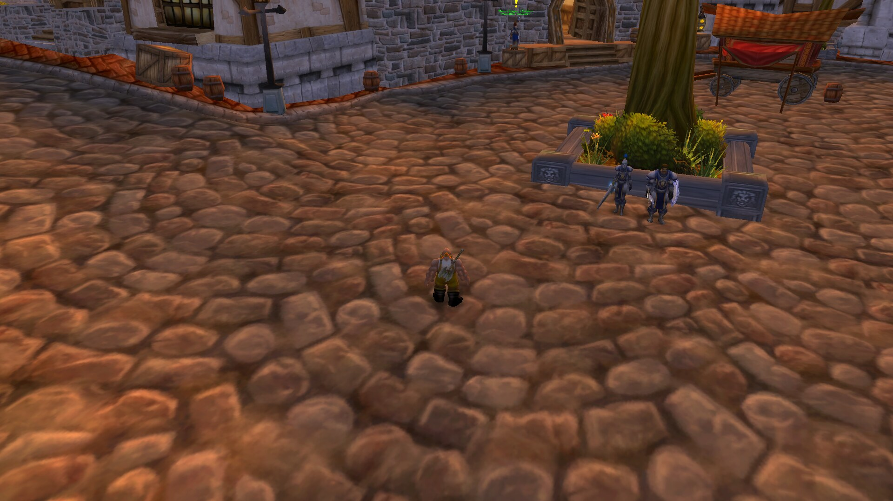
WoWGD benillaBooty Bay, Stranglethorn Vale
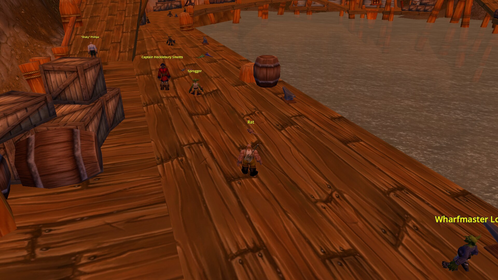
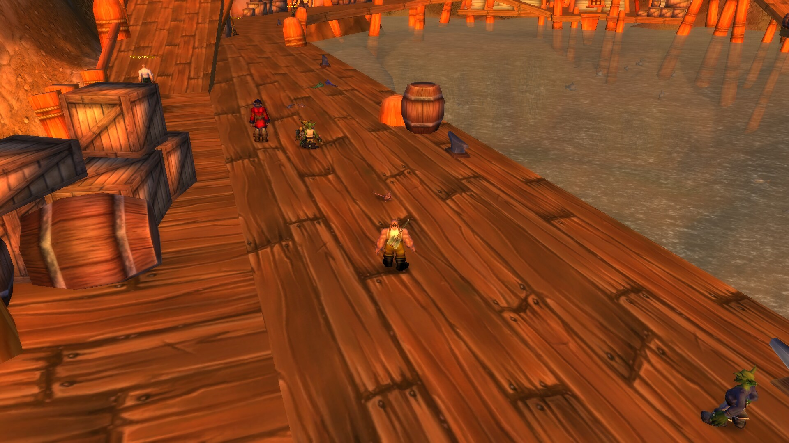
WoWGD benillaDarnassus
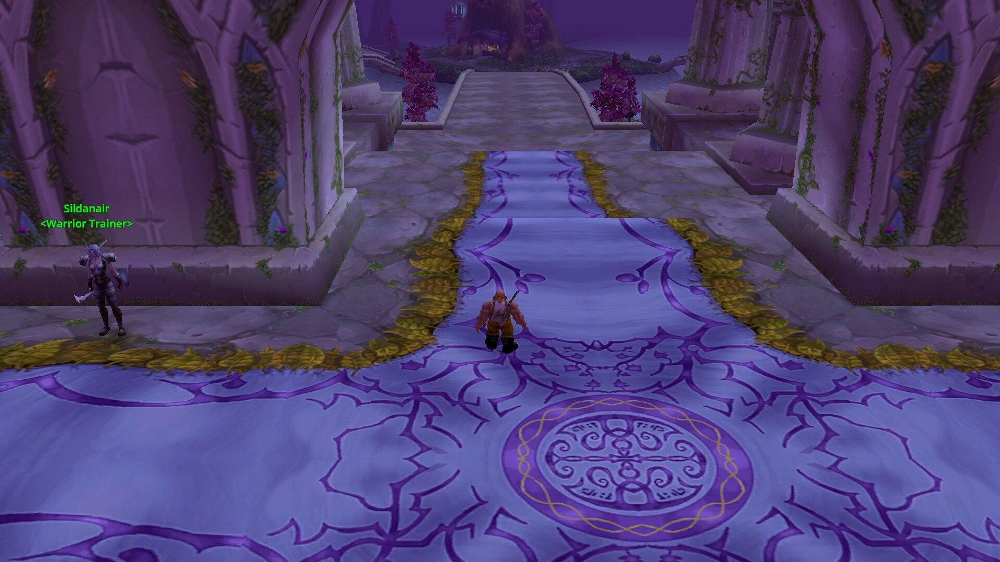
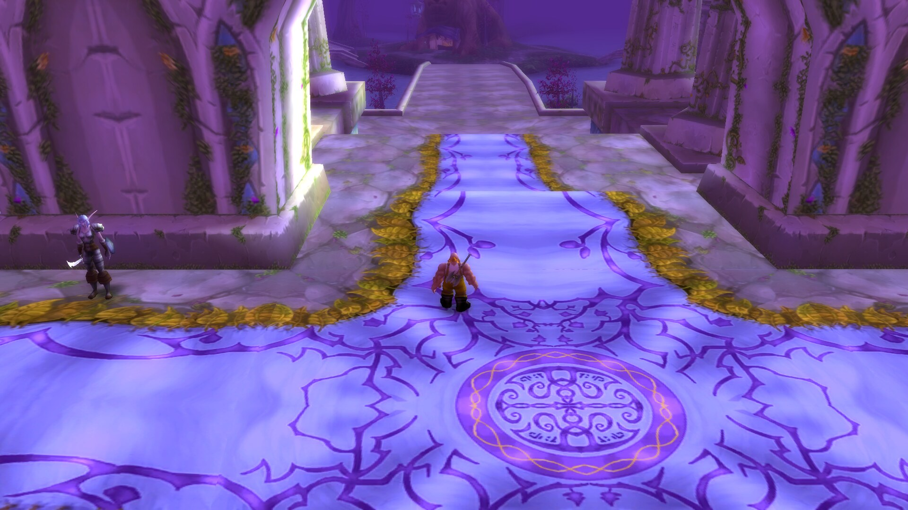
WoWGD benillaThunder Bluff
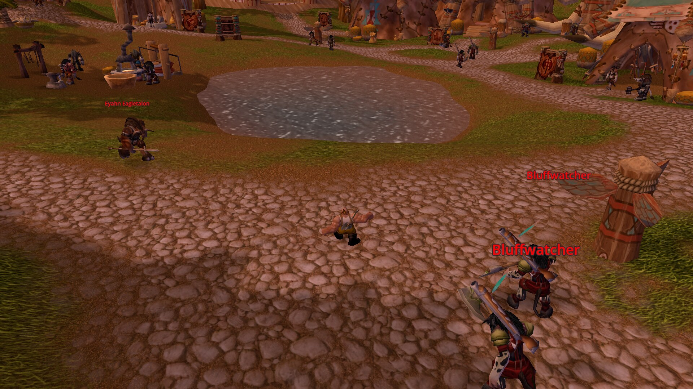
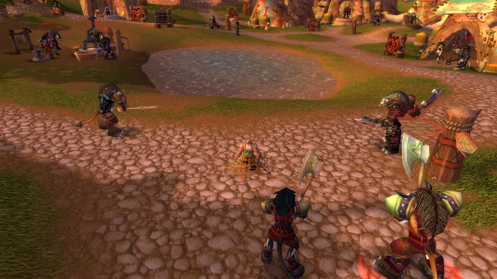
WoWGD benillaMoonglade
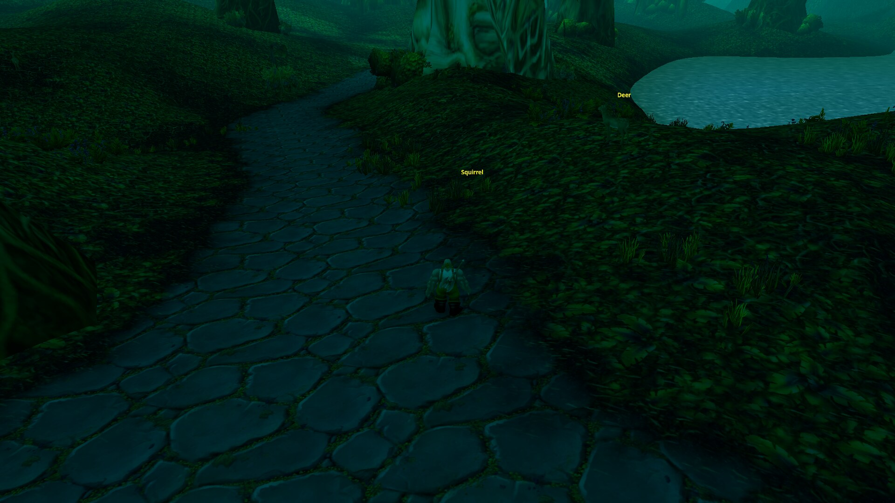
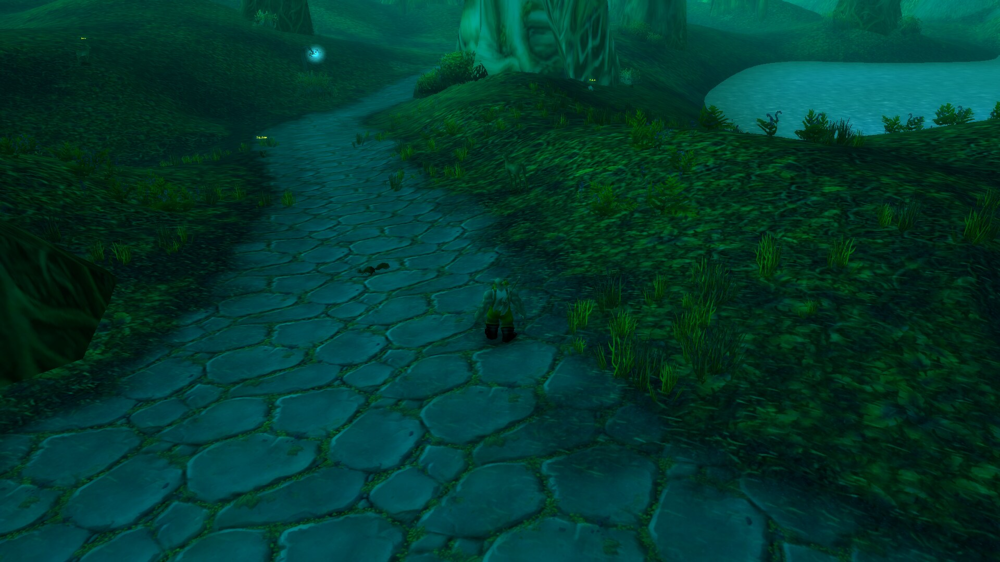
WoWGD benillaReproduce with python3 tools/bench_compare.py.